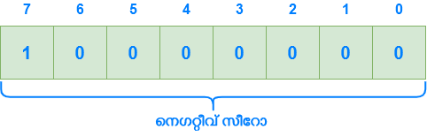

ബിറ്റ്വൈസ് നോട്ട് പ്രവര്ത്തിക്കുന്നതെങ്ങനെ?
ബിറ്റ്വൈസ് നോട്ടിനെക്കുറിച്ച് ചര്ച്ച ചെയ്തപ്പോള് ബോധപൂര്വം ചര്ച്ച ചെയ്യാതെ വിട്ട കുറച്ചു കാര്യങ്ങളെക്കുറിച്ചാണ് ഈയൊരു ഭാഗത്ത് ചര്ച്ച ചെയ്യുന്നത്. ബിറ്റ്വൈസ് നോട്ടിന്റെ പ്രവര്ത്തനത്തെക്കുറിച്ച് ചര്ച്ച ചെയ്യുന്നതിന് മുമ്പ് മറ്റ് ചില കാര്യങ്ങള് കൂടെ ചര്ച്ച ചെയ്യേണ്ടത് അനിവാര്യമാണ്. നമുക്കറിയാം പോസിറ്റീവ് സംഖ്യകള് പോലെ തന്നെ വളരെ പ്രധാനപ്പെട്ടതാണ് നെഗറ്റീവ് സംഖ്യകളും. നമ്മള് നെഗറ്റീവ് സംഖ്യകള് എങ്ങനെ പ്രതിനിധീകരിക്കാം എന്നുള്ളത് ഇതേ വരെ ചര്ച്ച ചെയ്തിട്ടില്ല. അത് അറിഞ്ഞാല് മാത്രമാണ് നമുക്ക് ബിറ്റ്വൈസ് നോട്ട് നമ്മള് പ്രതീക്ഷിക്കാത്ത ഔട്ട്പുട്ട് നല്കുന്നു എന്നു മനസ്സിലാക്കാന് ആകൂ.
സൈന്ഡ് മാഗ്നിറ്റ്യൂഡ് റെപ്രെസെന്റേഷന്
സൈന്ഡ് മാഗ്നിറ്റ്യൂഡ് റെപ്രെസെന്റേഷന് ഉപയോഗിച്ച് ഒരു നമ്പറിനെ ഏറ്റവും എളുപ്പത്തില് എങ്ങനെ പോസിറ്റീവ് ആയും നെഗറ്റീവ് ആയും പ്രതിനിധീകരിക്കാം. ഇവിടെ മോസ്റ്റ് സിഗ്നിഫിക്കന്റ് ബിറ്റ് 0 ആണെങ്കില് ഒരു സംഖ്യ പോസിറ്റീവ് ആണെന്നും 1 ആണെണെങ്കില് ആ സംഖ്യ നെഗറ്റീവ് ആണെന്നും കൂടാതെ ബാക്കിയുള്ള ബിറ്റുകള് സംഖ്യയുടെ പരിമാണം അഥവാ മാഗ്നിറ്റ്യൂഡ് തീരുമാനിക്കുന്നു എന്നാണ് സൈന്ഡ് മാഗ്നിറ്റ്യൂഡ് റെപ്രെസെന്റേഷന് പറയുന്നത്.

പക്ഷേ ഇവിടെ ഒരു പ്രശ്നം ഒളിഞ്ഞിരിക്കുന്നുണ്ട്. \(0_{10}\) എന്നുള്ളത് എനിക്ക് രണ്ട് രീതിയില് എഴുതാം.


പോസിറ്റീവ് 0-യും നെഗറ്റീവ് 0-ഉം തമ്മിലുള്ള വിത്യാസം ഒരു സോഫ്റ്റ്വെയർ എഞ്ചിനീയറെ സംബദ്ധിച്ച് എളുപ്പത്തില് പരിശോധിക്കാവുന്ന കാര്യമാണ്. എന്നാല് ഹാർഡ്വെയർ എഞ്ചിനീയറെ സംബദ്ധിച്ച് ഡിജിറ്റല് സര്ക്യൂട്ട് സങ്കീര്ണമാകുന്നതനുസരിച്ച് പോസിറ്റീവ്/ നെഗറ്റീവ് 0 എന്ന ആശയം പ്രതിസന്ധികള് സൃഷ്ടിക്കും. അതിനാല് തന്നെ സൈന്ഡ് മാഗ്നിറ്റ്യൂഡ് റെപ്രെസെന്റേഷന് ബദല് ആവശ്യമാണ്.
ടൂസ് (2's) കോംപ്ലിമെന്റ് മെത്തേഡ്
തുടരും